Pre-Course Setup & Quarto Guide
ECON206 & ECON10
2026-04-06
Welcome!
Course Information
- Courses: ECON206 & ECON10
- Goal: Set up your development environment before class
- Focus: Minimize setup issues during class so we can focus on coding
What We’ll Cover Today
Part 1: Pre-Course Setup
- GitHub & Copilot
- VS Code
- Python
- Quarto
- Extensions
Part 2: Quarto Basics
- Document structure
- Adding figures
- Creating tables
- Writing equations
- Rendering documents
Part 1: Pre-Course Setup
Step 1: GitHub Account & Copilot
Do this first — verification can take a few days.
Full step-by-step guide: Pre-Course Preparation Guide
- Create a GitHub account
- Set up Two-Factor Authentication (2FA)
- Fill in Billing Information (no payment required)
- Upload your Enrollment Verification certificate as proof of enrollment
Tip: Apply on campus (or close to campus) — GitHub uses your location for verification and approvals are faster from the Clark network.
Step 1a: Create a GitHub Account
Go to https://github.com and click Sign up (top-right corner).
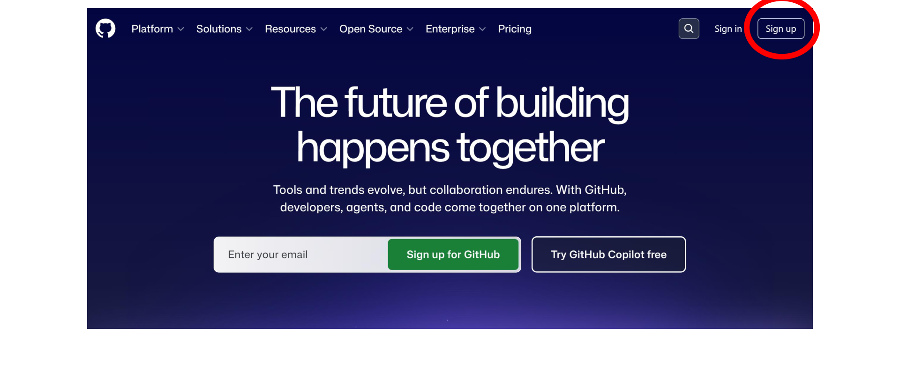
GitHub homepage — click “Sign up” in the top-right corner
Step 1b: Set Up Two-Factor Authentication
From your GitHub Dashboard, click your profile icon → Settings.
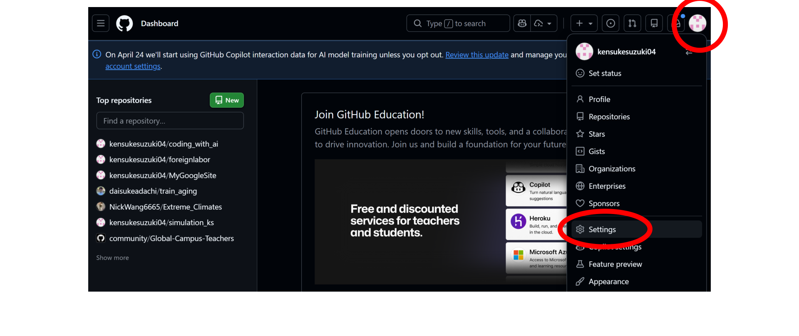
GitHub Dashboard — click profile icon, then Settings
Step 1b: Two-Factor Authentication (cont.)
In Settings, click Password and authentication in the left sidebar.
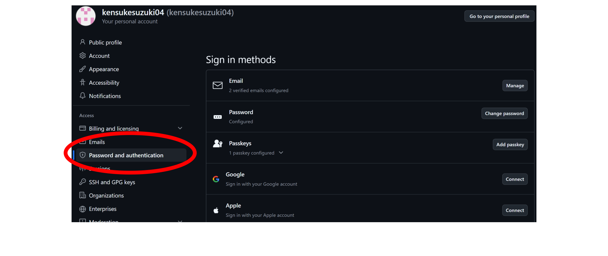
GitHub Settings — click “Password and authentication”
Step 1b: Two-Factor Authentication (cont.)
Enable Two-factor authentication. You can use the same authenticator app you use for Clark University.
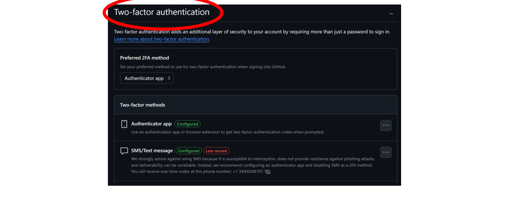
Enable 2FA — use the same app as Clarku
Step 1c: Set Up Billing Information
Go to Settings → Billing and licensing → Payment information and click Edit next to Billing information.
No payment required — just fill in the address fields.
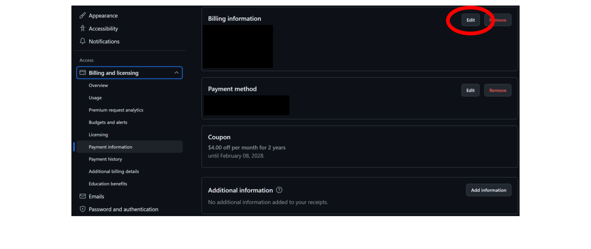
GitHub Billing — click Edit on Billing information (no payment needed)
Apply for the GitHub Student Developer Pack
Go to https://education.github.com/pack and apply.
What you get (free for students):
- GitHub Copilot Pro — AI coding assistant inside VS Code
- Access to other developer tools and credits
What GitHub needs from you:
- A verified student email or proof of enrollment
- Your location (apply on campus for fastest approval)
Tip: Apply while connected to the Clark University network — approvals are much faster.
Step 1d: Get Enrollment Verification
Log in to https://cuweb.clarku.edu. Under Student Records and Registration, click Enrollment Verification.
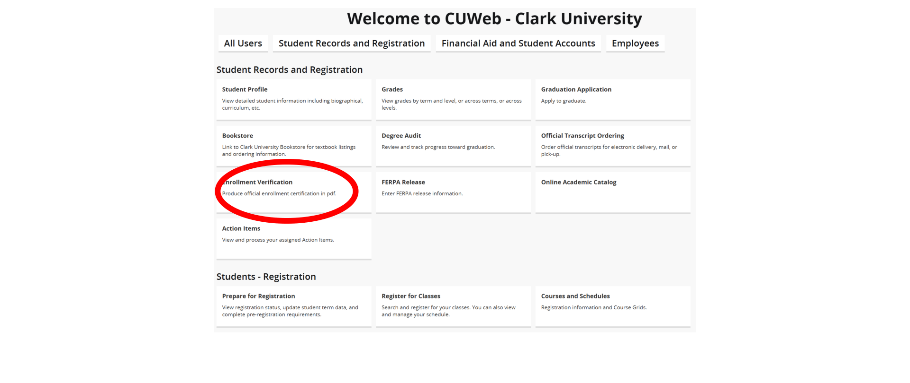
CUWeb — click Enrollment Verification under Student Records and Registration
Step 1d: Take a Screenshot
CUWeb displays your Current Enrollment Verification Certificate. Take a screenshot and upload it when GitHub asks for proof of enrollment.
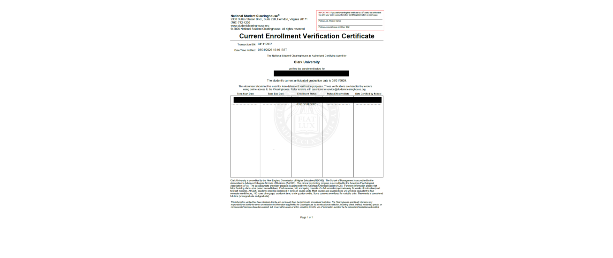
Current Enrollment Verification Certificate — take a screenshot to upload
Students who used Enrollment Verification reported immediate approval!
Software Installation
Recommended Folder Structure
Create this folder before you start. All your files go inside it.
For setup/testing:
Documents/
└── Economics/
└── setup_test/
├── test.py
└── test.qmdFor ongoing coursework:
Documents/
└── Economics/
├── setup_test/
├── econ206/
│ └── (your work here)
└── econ10/
└── (your work here)- Avoid spaces in folder/file names (use
_instead) - Keep a clear hierarchy: General → Subject → Project
Always Start with “Open Folder” in VS Code
Before creating or saving any file, every single time:
- Go to File → Open Folder
- Select your course folder (e.g.,
Economics/setup_test/) - Create and save all files inside that folder
⚠️ Common mistake: Some students saved files outside the working directory — on the Desktop, in Downloads, or in a random location. When this happens, VS Code cannot find your other files and code will not run correctly.
| ❌ Don’t do this | ✓ Do this |
|---|---|
Open a .py file directly |
Open the folder first |
| Save to Desktop or Downloads | Save inside your course folder |
| Drag a file into VS Code | Use File → Open Folder |
Step 2: Install Visual Studio Code
Download: https://code.visualstudio.com/download
Installation Tips (Windows):
- Enable “Add to PATH”
- Enable “Open with Code”
- Register Code as an editor for supported file types

Step 2: Test VS Code
- Open VS Code
- Go to File > Open Folder and select your
setup_testfolder - Create a new file (e.g.,
hello.txt) and type something - If VS Code opens and the file saves without errors, it’s working ✓
Step 2: Install VS Code Extensions
Click the Extensions icon on the left sidebar and install:
- Python by Microsoft
- Jupyter by Microsoft
- Quarto by Quarto
- GitHub Copilot by GitHub
Step 3: Install Python — Download
Go to https://www.python.org/downloads/
- Windows: click “Or get the standalone installer for Python 3.14.3” to download a
.exefile - Mac: click “Download Python 3.14.3” to download a
.pkgfile
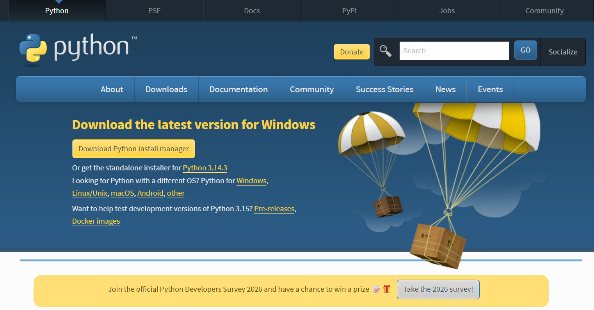
Step 3: Install Python — PATH Checkbox (Windows)
Key Step (Windows only):
✓ Check “Add Python to PATH” before clicking Install Now
On Mac, the installer sets PATH automatically — no checkbox needed.
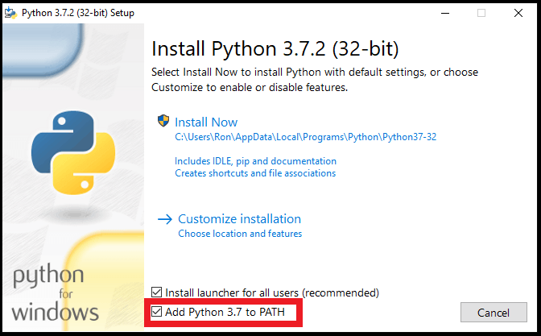
Opening the Terminal
Windows — Command Prompt:
- Click the Start menu
- Type
cmd - Open Command Prompt
Mac — Terminal:
- Press
⌘ Command + Spaceto open Spotlight - Type
Terminal - Click Terminal in the results

Step 3: Test Python
Windows — in Command Prompt or VS Code terminal:
Mac — in Terminal or VS Code terminal:
Mac tip: Always use
python3, notpython— on Mac,pythonmay not work or point to an old version.
Expected: Python 3.14.3 ✓
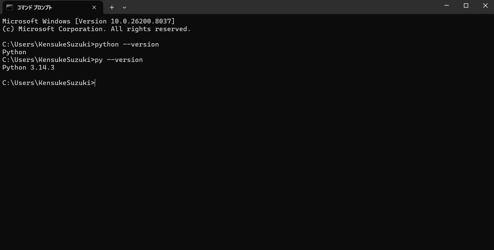
Step 3b: Run Python in VS Code

Step 4: Install Quarto — Download
Go to https://quarto.org/docs/get-started/
- Use the current release v1.9.36 (not the pre-release)
- Windows: download the
.msifile - Mac: download the
.pkgfile
Run the installer and finish installation.
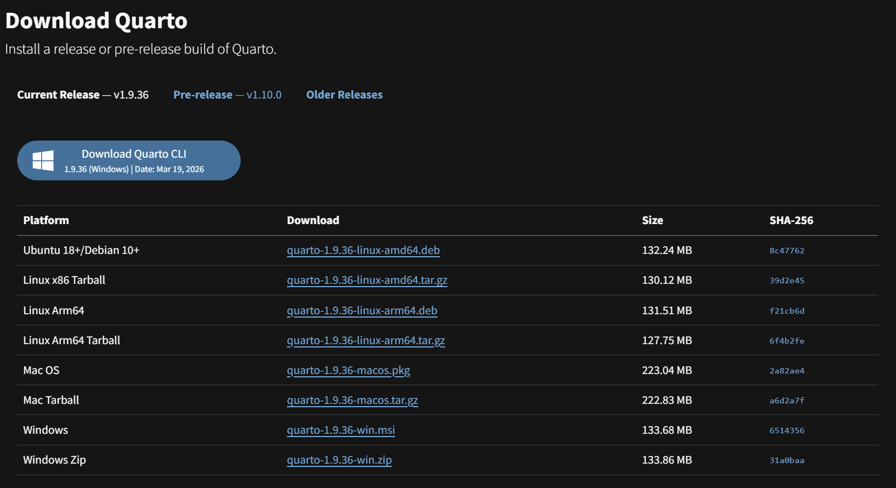
Step 4: Test Quarto
Open the VS Code terminal (Terminal > New Terminal) and run:
Expected output: 1.9.36 ✓
If you see command not found, try restarting VS Code or your computer.
Step 5: Install PDF Engine for Quarto
Recommended: TinyTeX (simplest option)
Run this in your terminal:
Quarto handles the download automatically. This may take a few minutes — that is normal.
Alternatives (if TinyTeX fails):
TeX Live · MiKTeX
Step 5: What Does That Command Mean?
| Part | What it does |
|---|---|
quarto |
Calls the Quarto program you installed in Step 4 |
install |
Tells Quarto to download and install something |
tinytex |
A lightweight LaTeX engine — needed to create PDF files |
You do not need to visit any other website. Quarto installs TinyTeX for you automatically.
Step 5b: Test Quarto PDF Rendering
In your setup_test folder, create test.qmd:
Run:
Expected: A new file test.pdf appears ✓
Verify & Finalize
Step 6: Confirm Everything Works
Installation
- ✓ VS Code opens normally
- ✓ Python runs in terminal (
python --version) - ✓ Quarto runs in terminal (
quarto --version) - ✓ GitHub account ready for VS Code sign-in
Extensions & Tests
- ✓ Python extension installed
- ✓ Jupyter extension installed
- ✓ Quarto extension installed
- ✓
test.pyruns successfully - ✓
test.qmdrenders to PDF
What NOT to Install
- ❌ Project-specific Python packages yet
- ❌ Virtual environments yet
- ❌ Additional data science tools yet
We’ll do all of this in class!
Part 2: Quarto Basics
What is Quarto?
Quarto is a document publishing system that lets you:
- Write in Markdown
- Include code and equations
- Generate HTML, PDF, Word, slides, websites
- Mix text, figures, tables, and code output
Key Concept: Working Directory
Simple Rule:
Keep your files organized in one folder:
my_project/
├── draft.qmd
├── figure1.png
├── table1.csv
└── data/
└── sample.xlsxWhen you run quarto render draft.qmd, Quarto looks for files relative to this folder
General Template
How to Add Figures
Same folder as your .qmd file:
In a subfolder:
⚠️ Common error: Wrong file path or typo in filename
How to Make Tables: Option A
Simple Markdown table
Renders as:
| Item | Amount |
|---|---|
| Apples | 12 |
| Oranges | 8 |
How to Make Tables: Option B
Convert from Excel to CSV
- Save your Excel file as CSV
- Use an online converter to generate Markdown:
- TableConvert: https://tableconvert.com/excel-to-markdown
- TablesGenerator: https://www.tablesgenerator.com/markdown_tables
- Paste the output into your
.qmdfile
How to Include Hyperlinks
External links:
Local files:
How to Write Equations
Inline equations (with $...$):
Renders as: The demand function is \(Q_d = a - bP\).
Display Equations
Block equations (with $$...$$):
More examples:
LaTeX Math Resources
- Overleaf: https://www.overleaf.com/learn/latex/Mathematical_expressions
- Detexify: https://detexify.kirelabs.org/classify.html (draw a symbol to find its code)
- Wikibook: https://en.wikibooks.org/wiki/LaTeX/Mathematics
How to Render Your Document
Basic render (HTML):
Render to PDF:
Render to Word:
⚠️ PDF error? Check your PDF engine installation
You’re Ready! 🎉
Next Steps:
- Before Class: Complete all installation steps
- Verify: Run the test files to confirm everything works
- In Class: We’ll build on this foundation together
Questions?
Feel free to reach out if you encounter any issues during setup!